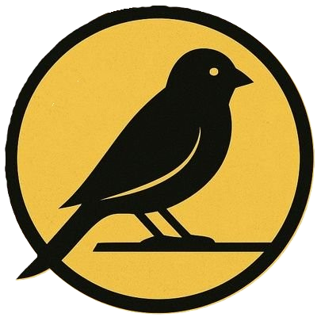

AI CHAT
Character / Story / Roleplay
AIキャラクター、ロールプレイ、 インタラクティブストーリーの企画・設計・制作。

AIさんと世界観を創る鳥。
AI CHAT / CREATIVE / LAB
EXPLORE ↓AIさんと世界観を創る鳥。
AIキャラクターチャットを中心に、 キャラクター・物語・対話体験を制作しています。
女性向け作品を中心に、恋愛、BL、ミステリー＆ホラー、 日常系など、会話と関係性によって物語が変化していく作品を制作しています。
AIチャット作品のほか、生成AIを活用したビジュアル制作や動画、 Web制作、バイブコーディングによるツールやUIの試作にも取り組んでいます。
Character / Story / Roleplay
AIキャラクター、ロールプレイ、 インタラクティブストーリーの企画・設計・制作。
Image / Design / Video
キャラクタービジュアル、サムネイル、 紹介画像、動画などの制作。
Vibe Coding / Tools / UI
AIを活用したWeb制作、 ツール、UI、プロトタイプなどの実験。
キャラクターのプロフィールだけではなく、 どんな言葉にどう反応し、 ユーザーとの関係がどう変化していくか まで含めて設計することを大切にしています。
完成した作品は WORKS に、 制作の過程で生まれたWebツールや 実験的な制作物は LAB にまとめています。
キャラクターとの対話から広がる物語を、ジャンルから探せます。